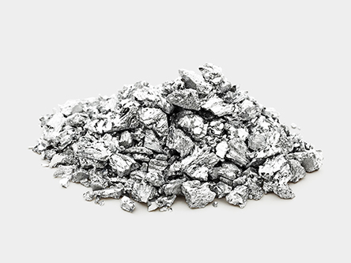
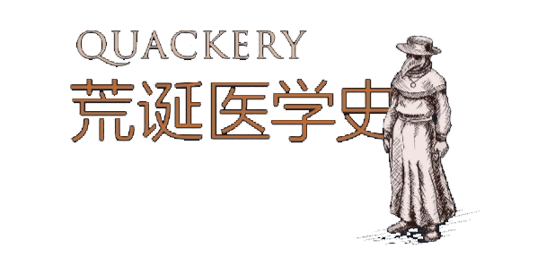

锑：欧洲人民钟爱的催吐灵丹
奥利弗·哥尔德斯密斯的最后闹剧，伪造的巴西尔·瓦伦丁，库克船长的杯子，通便传家宝
- 呕吐是身体排出胃里东西的方式，这一过程既违反重力，也违反正常的消化过程。它主要是通过刺激胃黏膜，引发作呕反射，信号传递到大脑中的“呕吐中心”（相信我，这样的神经区真的存在），这个逆消化的过程就此开启。像锑这样的催吐剂，就是人在有意想让自己呕吐时服用的物质，而催吐剂的使用，有着漫长而光辉的历史。
- 大部分催吐剂的使用，都可溯源到四液说：这一理论认为，当体内的血液、黑胆汁、黄胆汁、黏液四种体液失衡时，人体就会产生疾病。而通过呕吐、腹泻、出汗或唾液分泌来恢复体液平衡，则是必需的。基本上，从毛孔向外渗出液体，或是从身体的任何一个孔洞向外排泄，都是在令你恢复平衡。
- 锑是一种在世界各地均有矿藏的灰色金属，自公元前3000年就被广泛用于催吐。众所周知，有些人在大餐一顿之后，喜欢使用催吐剂来清空自己，例如，罗马皇帝尤利乌斯·恺撒、克劳狄乌斯都这么做过。尼禄皇帝的顾问小塞内加曾经说，一些罗马人“吐了吃，吃了吐，根本不屑于消化他们集世界各地美食于一桌的盛宴”。据说，有一种含锑的酒即被用于此目的（有意思的是，vomitorium一词有很长时间都被认为是供罗马的聚会爱好者暴饮暴食的场所。但实际上，它指的是露天竞技场的出口，供人群“倾泻”离开建筑。没错，这个建筑学术语将人等同于呕吐物）。
- 但是，要让身体逆反正常的机体过程，有时候你需要给它一些避之唯恐不及的东西，比方说，毒药。学者和治疗者都承认锑的剧毒性。锑能造成肝损伤、严重的胰腺炎、心脏问题，以及死亡。不过，很多人相信医生可以驾驭这种致命的力量。当时的人对锑有一种很普遍的观点：“毒药到了医生手中就不再是毒药。
- 有很多人相信锑可以“完善身体”，能净化它接触到的一切不洁物质。锑被广泛地应用于一切疾病的治疗，从哮喘、过敏到梅毒、瘟疫。1658年，法国国王路易十四重病垂危之际，服用了一剂锑。他康复了（真是奇迹），然后法国国内围绕锑的论战就此结束，锑成了一位闪闪发光的金牌得主。